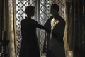

| EP |
Imagem |
Titulo |
Prévia |
| 51 |

|
"The Red Woman" |
Em Castelo Negro, Throne defende sua traição, enquanto Edd e
Davos defendem a si mesmos. Theon e Sansa fogem do frio e de
cachorros. Daenerys encontra um homem poderoso. Cersei
reencontra sua filha.
|
| 52 |
|
"Home" |
Bran treina com o corvo de três olhos. Em Porto Real, Jaime
aconselha Tommen. Tyrion exige boas notícias, mas terá que
fazê-las por si mesmo. Em Castelo Negro, a Patrulha da Noite
apoia Thorne.
|
| 53 |
|
"Oathbreaker" |
Daenerys se depara com o futuro, e Bran, com o passado. Tommen
enfrenta o Alto Pardal. Arya treina para se tornar Ninguém.
Varys encontra uma resposta. Ramsay recebe um presente.
|
| 54 |

|
"Book of the Stranger" |
Tyrion sela um acordo. Jorah e Daario realizam uma tarefa
difícil. Jaime e Cersei tentam melhorar sua situação.
|
| 55 |
|
"The Door" |
Tyrion procura um aliado estranho. Bran descobre algo
importante. Brienne sai em uma missão. Arya ganha uma chance de
provar a si mesma.
|
| 56 |
|
"Blood of My Blood" |
Um velho inimigo está de volta. Gilly se reúne a família de Sam.
Arya enfrenta uma escolha difícil. Jaime enfrenta o Alto Pardal.
|
| 57 |
|
"The Broken Man" |
O Alto Pardal mira seu próximo alvo. Jaime confronta um herói.
Arya tem um plano. O Norte é lembrado.
|
| 58 |
|
"No One" |
Jaime pondera suas opções e Cersei responde um chamado. Os
planos de Tyrion começam a dar frutos. Arya enfrenta um novo
teste.
|
| 59 |
|
"Battle of the Bastards" |
Daenerys restabelece a paz em Meereen. Em Westeros, dois
bastardos nortenhos se enfrentam no campo de batalha. Sansa tem
uma carta na manga.
|
| 60 |
|
"The Winds of Winter" |
Cersei enfrenta um dia de acerto de contas em Porto Real.
Mindinho revela suas intenções para Sansa. Bran incorpora o
corvo de três olhos. Daenerys se prepara para o "grande jogo".
|